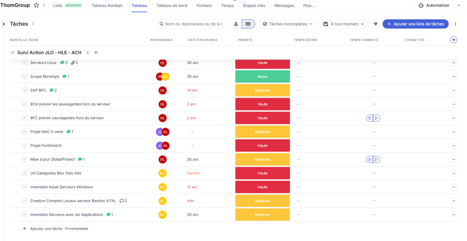

Immersion chez ThomGroup
Deux stages au cœur de l'équipe Système & Réseau.
Contexte
J'ai réalisé mes stages obligatoires de 2ème et 3ème année au sein du groupe ThomGroup, dans une équipe chargée des systèmes et de réseau uniquement composée d'ingénieurs. Cette immersion dans un environnement de haut niveau m'a permis de comprendre les exigences réelles d'une infrastructure d'entreprise.
Adaptation et Méthodologie
À mon arrivée en 2ème année, je ne vais pas le cacher : j'étais un peu perdu. Entre les termes techniques que je n'avais jamais entendus et des outils totalement nouveaux pour moi, j'avais beaucoup de mal à suivre les discussions de l'équipe. Mais au lieu de baisser les bras, j'ai posé des questions et je me suis accroché à mes connaissances. Grâce à la patience des ingénieurs et à ma curiosité, j'ai fini par vite comprendre et devenir efficace. J'ai alors pu prendre de l'autonomie pour gérer mes premières missions via l'outil de ticketing GLPI et via notre Workspace dédié où les projets plus complexes de l'architecture étaient organisés.

Montée en Compétences
L'entreprise m'a rappelé pour ma 3ème année, autant pour mes résultats que pour mon bon contact avec l'équipe. Ce retour a été une vraie marque de confiance car on m'a confié des missions similaires à celles des ingénieurs. Porter ces responsabilités au quotidien m'a permis d'affiner mes compétences et de prendre une réelle place au sein du groupe, malgré parfois des difficultés que j'ai réussi à combler par mes recherches et mon apprentissage.
Compétences techniques acquises
Système & Datacenter
- VMware vSphere & Sauvegarde Networker
- Mise en service / Décommissionnement physique
- Brassage et maintenance en Datacenter
Réseaux & Sécurité
- Cisco / Palo Alto / SD-Wan Fortinet
- Gestion VPN & Sécurité Bitdefender
- EfficientIP & Lansweeper
Middleware & Méthode
- Bases de données : SQL / Oracle
- Rédaction de procédures techniques (Wiki)
- Gestion de tickets via GLPI
Ce stage chez ThomGroup m'a fait comprendre l'impact des systèmes et réseaux dans le monde professionnel. Je suis fier de ce stage qui m'a énormément apporté, tant en termes de compétences techniques que de connaissance du milieu de l'entreprise. De plus, je suis resté en très bons termes avec mon maître de stage, avec qui j'ai appris à allier rigueur technique et qualités humaines.
Documents de stage
Retrouvez les détails techniques de mes missions en entreprise.